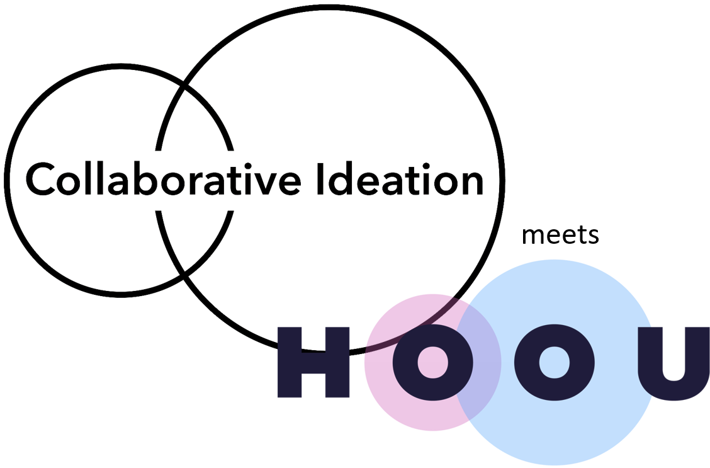
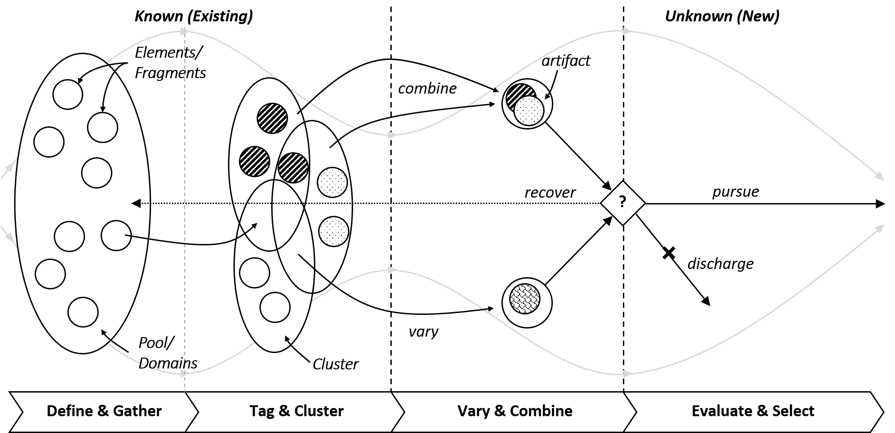
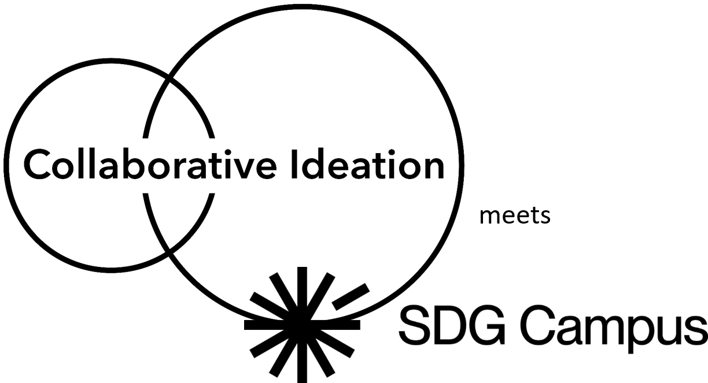

🎓 Freie Bildung: Selbstlernkurs Collaborative Ideation
Dieses Lernangebot wurde im Rahmen der Hamburg Open Online University (HOOU) entwickelt und ist dort dauerhaft und kostenfrei verfügbar.
In fünf kompakten Lernblöcken wird gezeigt wie Kreativmethoden und -werkzeuge eingesetzt werden können, um gemeinsam innovative Ideen zu entwickeln – insbesondere in dezentralen Teams mit digitalen Mitteln.
Das Lernangebot beinhaltet die strukturierte Problembeschreibung, Ideenerzeugung und -bewertung. Im Mittelpunkt stehen offene Zusammenarbeit, Kreativität und der strukturierte Einsatz von methodischen Werkzeugen.
🧠 Inhalte des Kurses
- Probleme analysieren und eingrenzen.
- Ideen entwickeln, kombinieren und bewerten.
- Gruppen zum Mitmachen motivieren.
- Kreativmethoden anwenden.
- Digitale Tools für kollaboratives Arbeiten nutzen.
Angebote
Kollaborative Ideenwerkstatt auf der Hamburg Open Online University (HOOU)
Kreativitätstechniken für Teams & Einzelpersonen – spielerisch und inspirierend.
Kreiere deine eigene Welt der Ideen im MIROVERSE.
Template der Welt der Ideen aus dem HOOU-Lernangebot Collaborative Ideation. Zum selber ausfüllen für die eigene Problemlösung oder zur Durchführung von Workshops im Team.
Nutze 4 Step Creation im MIROVERSE
Template der 4 Step Creation Methode aus dem HOOU-Lernangebot Collaborative Ideation. Definiere eigene Betrachtungsdimensionen, Variationstypen und Evaluationsverfahren für die Schöpfung innovativer Artefakte.
🌍 SDG-Campus-Kurs: Kreative Lösungen für globale Herausforderungen
Dieses Lernangebot wurde im Rahmen des SDG-Campus entwickelt und wird dort im Sommersemester 2025 zum ersten Mal angeboten.
In mehreren Lernblöcken wird gezeigt, wie Kreativmethoden und -werkzeuge eingesetzt werden können, um innovative Lösungen für gesellschaftliche und ökologische Herausforderungen zu entwickeln – von Klimaschutz über Müllvermeidung bis zu sozialer Gerechtigkeit.
Es werden Probleme systematisch analysiert, Ideen gezielt entwickelt und bewertet. Im Fokus stehen eigenständiges Arbeiten, Zusammenarbeit im Team sowie der reflektierte Einsatz kreativer und digitaler Tools.
🧠 Inhalte des Kurses
- Systematische Problemlösung bei komplexen Herausforderungen.
- Recherche und Ursachenanalyse.
- Kreative Ideenentwicklung und -auswahl.
- Stärkung von kritischem Denken, Teamarbeit und Umsetzungskompetenz.
Angebote
Challenge - Collaborative Ideation auf dem SDG-Campus
Neue Lösungen für komplexe Probleme unserer Zeit – kreativ und nachhaltig.
🤝 Teamwork & Innovation: Praxisorientierter Kurs für Teams und Unternehmen
Dieses speziell für Teams (z.B.in NGOs) und Unternehmen entwickelte Lernangebot unterstützt Sie dabei, kreative Prozesse und kollaborative Methoden gezielt in Ihrem Arbeitsalltag zu verankern.
In praxisnahen Modulen lernen Ihre Teams, wie sie gemeinsam Herausforderungen identifizieren, innovative Ideen generieren und effektive Lösungen umsetzen – auch in verteilten oder interdisziplinären Arbeitsgruppen.
Der Fokus liegt auf der Förderung von Teamdynamik, kreativem Denken und der Nutzung digitaler Tools zur effizienten Zusammenarbeit und nachhaltigen Wirkung.
🧠 Inhalte des Kurses
- Gemeinsame Analyse und Priorisierung von Herausforderungen.
- Innovationsfördernde Kreativtechniken im Team anwenden.
- Motivation und Engagement innerhalb von Teams stärken.
- Digitale Werkzeuge für kooperative Projektarbeit effizient nutzen.
- Strategien zur Umsetzung und Skalierung von Ideen entwickeln.